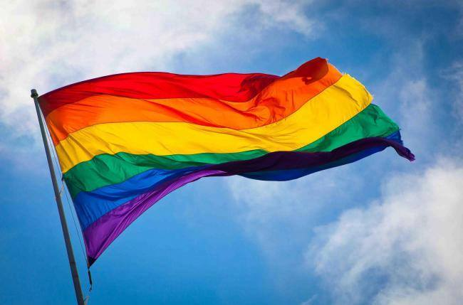
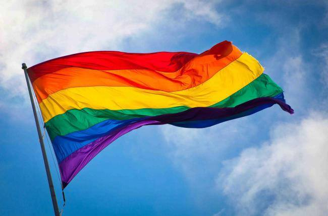

Our names are Juliana, Colleen, and Alaya and we're three girls who met at Girls Who Code and decided to create this website as our final project! Our aim was to create a safe, inclusive, non-judgemental space for LGBTQ+ -indentifying individuals to give and receive advice and learn about their community. We also wanted to create an adaptable space determined by its users (hence the feedback page) and to have it provide a wide variety of sources and information about the LGBTQ+ community.
We named our site "Lavender" because of lavender linguistics, a term for the particular ways members of the LGBTQ+ community speak amongst each other, including speech patterns, pronunciation, certain vocabulary, as well as slang.
Nadia Morris is a woman in technology, specifically in engineering, design, and product development. She works for AT&T, her current position being in charge of the Lead Innovation Engineering team at the company's Foundry in California. Morris is an openly transgender women, who spent the early years of her career in the body of a man. For the last 10 years, she's been transitioning as female. She's an advocate for workforce diversity, supporting causes such as Lesbians Who Tech and Black Girls Code. Morris has been very successful throughout her career as a software engineer, having acquired over 20 patents in network security and mobile app development.
This is where we spotlight LGBTQ+ figures! This section can feature anyone, ranging from people with traditional careers to media figures (and anyone in between!). If you have any suggestions for future spotlights, fill out the form on the Feedback page!